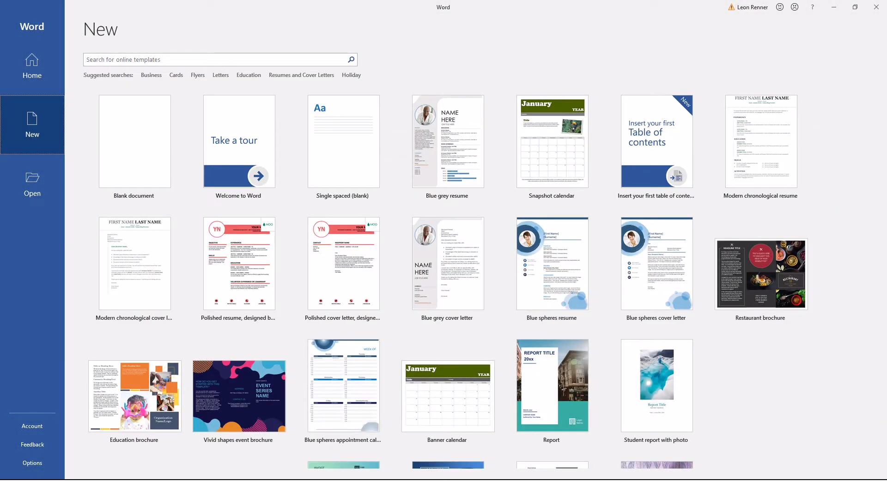
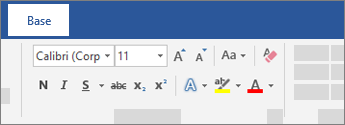
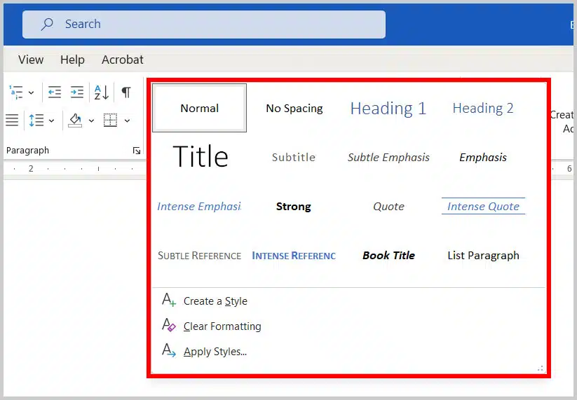
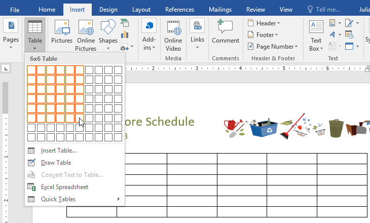
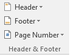
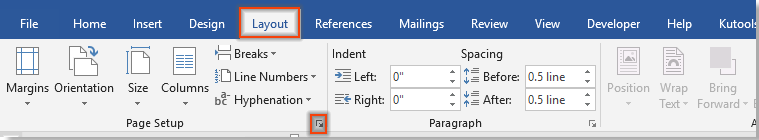

Abrir o Word atravez do menu iniciar

Esta é a página inicial do Word

Criar um Documento:

Aqui podemos escolher entre varios templates ou uma página em branco.
Salvar um Documento:

Ao clicar em Browse (Explorar) podemos selecionar um local expecifico, como uma pasta, onde queremos guardar o nosso documento.
Abrir um Documento:

Ao clicar em Browse (Explorar) podemos selecionar um local expecifico, como uma pasta, onde está guardado o nosso documento.
Por fim temos a página em branco do word

Este é menu Base:

Aqui podemos encontrar as funções de mudar o tipo de letra e o tamanho.
Também é possível colocar o texto em Negrito (N), Itálico (I), Sublinhado e Rasurado.

Aqui é possível colocar marcadores ou numeração no inicio de um paragrafo.
Neste sitio também temos as funções de Alinhar à esquerda, Centralizar, Alinhar à direita e Justificar.
Assim como mudar o Espaçamento entre as linhas.

Estas são as opções de titulos ou estilos que podemos escolher dos predefinidos ou criar um próprio.
Este é o menu Inserir


Com estas opções podemos, respetivamente, criar uma capa para o documento, adicionar uma página em branco e passar para a pagina seguinte.

Nesta aba podemos adicionar uma tabela do tamanho desejado ou importar uma tabela Exel.

Nesta secção podemos adicionar imagens do dispositivo ou online.

Aqui pode ser adicionado um cabeçalho, um rodapé e um número de página.
Este é o menu Layout

Neste menu encontramos funções relacionadas com as páginas
Nele podemos modificar as margens, a orientação, o tamanho, adicionar colunas e alterar também o espaçamento entre as folhas.
Este é geralmente utilizado antes de imprimir um documento, por exemplo.